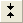
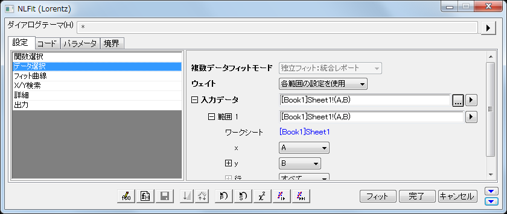

FAQ-226 グラフのデータプロットの一部をフィットするには?
Fit-Partial-Plot
最終更新日:2015/02/04
いくつかの方法があります。
- グラフをアクティブにして、「プロット操作・オブジェクト作成」ツールバーのデータセレクタツール を選択します。データプロットの開始点と終了点にマーカが表示されます。それぞれのマーカをクリックして、希望の開始位置と終了位置に移動します。マーカを移動すると、データ座標表示にX, Y座標が表示されます。マーカを配置したら、Enterキーを押して範囲を設定します。
- または領域データセレクタを使います
 。このツールではグラフのフィットしたい領域をドラッグアンドドロップで選択できます。2つのデータマーカーがどのデータをインプットされるかを表すために表示されます。
。このツールではグラフのフィットしたい領域をドラッグアンドドロップで選択できます。2つのデータマーカーがどのデータをインプットされるかを表すために表示されます。
- NLFitダイアログを以下の手順で開きます。解析：フィット：非線形曲線フィット。設定タブのデータ選択で、入力データと範囲1のノードにブラケットで囲まれた開始と終了の行番号が表示されます。以下の例では、これは [20:40]になっており、その範囲のみでフィットが実行されます。

範囲を修正するには、範囲1ノードの隣にある をクリックします。グラフから範囲を選択するを選び、 これはデータセレクタマーカーを編集モードにし、マーカを新しい値にします。
をクリックします。グラフから範囲を選択するを選び、 これはデータセレクタマーカーを編集モードにし、マーカを新しい値にします。
Origin 8.6以上のバージョンでは、入力データ：範囲1：行のノードを開くことで、Xによる範囲指定が可能です。例えば、開始の項目に0を入力し、終了の項目に10を入力すると、Xの範囲が0から10の間が選択され、範囲1は、[Lorentzian]Lorentzian!(A,B)[x10:45].に変更されます。
キーワード: サブセット, 選択, 範囲, セレクタ